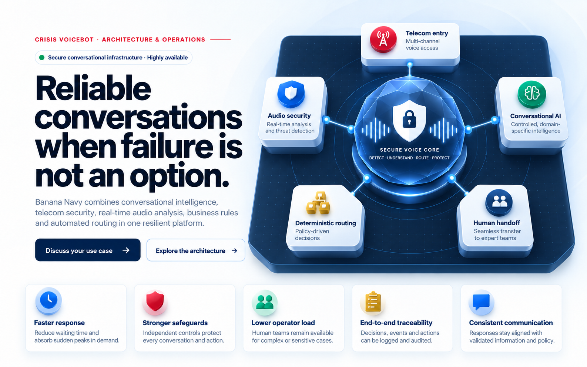

Faster response
Reduce waiting time and absorb sudden peaks in demand.
Crisis voicebot · Architecture & operations
Secure conversational infrastructure · Highly availableBanana Navy combines conversational intelligence, telecom security, real-time audio analysis, business rules and automated routing in one resilient platform.

Reduce waiting time and absorb sudden peaks in demand.
Independent controls protect every conversation and action.
Human teams remain available for complex or sensitive cases.
Decisions, events and actions can be logged and audited.
Responses stay aligned with validated information and policy.
Each interaction passes through seven coordinated stages. Security, comprehension and routing remain distinct, so the platform can act quickly without surrendering control.
Calls and voice interactions enter through the organisation's approved channels.
SIP, carrier, dedicated line, official numberAbnormal traffic, fraud attempts, overload and automated behaviour are filtered.
Anti-DDoS, anti-fraud, SIP filteringThe signal is assessed for noise, replay patterns, anomalies and suspicious input.
Voice activity and anomaly detectionThe engine identifies language, intent, context and organisation-specific rules.
Intent, context, validated knowledgeThe system responds, escalates, transfers or launches an approved workflow.
Business rules, priorities, risk levelsInformation, notifications and updates reach authorised people and systems.
CRM, SMS, messaging, operatorsNoise reduction and enhancement preserve intelligibility throughout the call.
Audio clean-up and clear playbackSupported by the Cyber Defence Factory / Cyber Command, Voice Bot Navy is developing secure, dual-use conversational infrastructure designed to progress from prototype to an operational capability at TRL 7. The project brings together telecom security, real-time audio analysis, controlled conversational AI, deterministic business rules, human oversight and end-to-end traceability.
The objective is dependable, auditable and consistent communication—even under heavy load or in sensitive operational contexts. Configurable escalation, human validation and safe fallback mechanisms keep critical decisions under organisational control.
Designed, hosted and operated in the European Union, the platform supports European data-residency requirements and compliance with applicable regulation, including the GDPR and the EU AI Act. Access, logging, retention and auditability remain governed by the deploying organisation.
Programme & institutional partners
The architecture avoids dependence on a single AI model. Independent controls monitor the signal, govern the conversation and decide what the system is permitted to do.
Assesses the live signal before a business response is executed.
Understands context and formulates answers within approved boundaries.
Applies organisational priorities before any automated action.
The same secure foundation can be adapted to crisis information, essential services, regulated customer journeys and high-volume operational communications.
Citizen information, service continuity, local incidents, administrative routing and large-scale communication.
Alerts, internal procedures, incident triage, team coordination and controlled intake during disruption.
Secure qualification, routing, customer support and governed handling of sensitive requests.
Reservations, recurring enquiries, multilingual service and centralised demand across multiple sites.
Passenger information, service disruption, redirection and consistent operational communication.
Non-clinical pre-qualification, structured guidance, overflow handling and round-the-clock availability.
Components are selected and configured around security, hosting, performance and integration requirements. The architecture complements existing systems rather than forcing a wholesale replacement.
Secure trunks, SIP filtering, fraud controls and overload protection.
Signal clean-up, voice activity detection and anomaly analysis.
Intent, context, retrieval, guided responses and deterministic scenarios.
Approved sources, structured records, histories and business repositories.
Escalations, notifications, CRM updates and governed business rules.
Dashboards, monitoring, incident follow-up and human control.
Centralised logs, alerting, retention policies and audit trails.
Connections to approved internal and external systems through controlled interfaces.
A concise overview of the platform's reliability, integration model and safeguards.
Conversational understanding is only one layer. Telecom traffic, the audio signal, business rules, routing and traceability are controlled separately. An anomaly can therefore be blocked or escalated without relying solely on the AI model.
Yes. The platform acts as a governed orchestration layer and can connect through APIs, webhooks, event queues or dedicated connectors, subject to the organisation's security and access policies.
No. The same foundation supports routine reception, demand peaks, customer assistance, qualification, alerts, field operations and recurring business processes.
Safety thresholds are configurable. The platform can stop automation, request validation, transfer to a human operator or trigger a predefined fallback workflow whenever confidence or risk conditions require it.
We can model a concrete journey around your call flows, security requirements, operating procedures and existing systems.